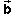
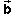
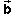

and  is in green.
and  is in green.
The sum of the vectors
and  is in green.
It points from the free tail end to the free tip of the two vectors.
If
and represent displacements, then
+ represents the displacement followed by displacement .
Now, in your Notebook, explain how to add two vectors by the tip-to-tail method. Illustrate it with a different pair of vectors.